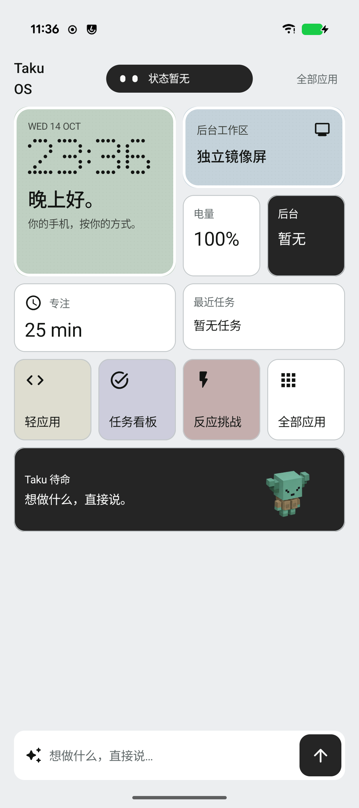

TAKU OS / Updated 2026-10-14 / Physical-device installation
Pixel 9 has reached the Taku OS launcher
Slot A installation succeeded · Android 16 · Taku launcher and root services tested
A development image retaining existing firmware was installed on a physical Pixel 9. The installer completed partition verification and post-processing; slot A was active before reboot, and bootloader/baseband versions were not downgraded. Ordinary ADB recovered; the running system is LineageOS 23.2-20261011-UNOFFICIAL-tokay / Android 16, with the Taku launcher displayed correctly. TaskBroker, VirtualDisplayHost, and ResolverBridge run as root. Ordinary ADB initially had uid 2000; adb root then succeeded, with measured shell uid=0.
Confirmed conditions
| Physical device model | Google Pixel 9 / tokay |
| Bootloader | Earlier Fastboot read: unlocked: yes |
| OTA | 1.64 GB · Partial A/B OTA · pre-device=tokay |
| Platform | LineageOS 23.2 / Android 16
userdebug / test-keys |
| Integrity | Revised-package SHA, CRC, and phone-side SHA passed; original compressed partition data unchanged |
Installed scope and pending verification
| Current phone firmware | Post-install check: bootloader ripcurrentpro-16.4-14791556; baseband g5400c-251201-260127-B-14784805; both unchanged |
| Candidate vendor baseline | BP4A.260205.002
2026-02-05 |
| Boot firmware in the package | The actual installation package updates only 14 Android/Taku partitions; older firmware entries from the original package were excluded. The installer preserves current firmware. |
| Actual boot acceptance | Running slot A; sys.boot_completed=1, ordinary ADB available, and CodexHomeActivity launcher confirmed by screenshot. Cold boot and full functional acceptance remain pending |
This image does not contain the latest chat UI
The existing OTA is the October 11 candidate. Inspection of the actual DEX in TakuAssistant.apk found neither AgentDrawerView、CodexAppServer nor ChatActivity; its build-input snapshot also lacks that newer source.
Flashing this package can test older Taku system integration, not the October 13 chat drawer, multiple conversations, or App Server UI. For the latest experience, include those changes in a new candidate build first.
Next acceptance steps
- Initial setup completed; ordinary ADB connection restored.
- Read back Lineage/Taku properties and confirmed TakuAssistant under system_ext/priv-app; three Taku background services run as root. adb root subsequently succeeded, and shell uid was 0.
- Verify the Taku main UI, independent display, input method, Wi-Fi, and sleep behavior.
- Finally perform physical cold boot and real Agent task acceptance as needed; these are not yet complete.
Bottom Agent composer deployed
The original messaging, camera, gallery, and browser dock was replaced by a fixed composer and Send button. APK v37 was installed over the existing app with matching signature; the composer remains visible with the keyboard open, and Send was tested to create a request entering the original background-task channel. The complete model result for the test task was not accepted yet.
Actual launcher
